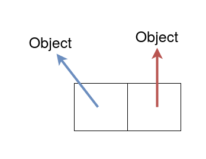
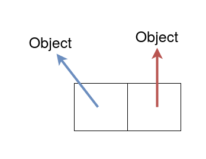
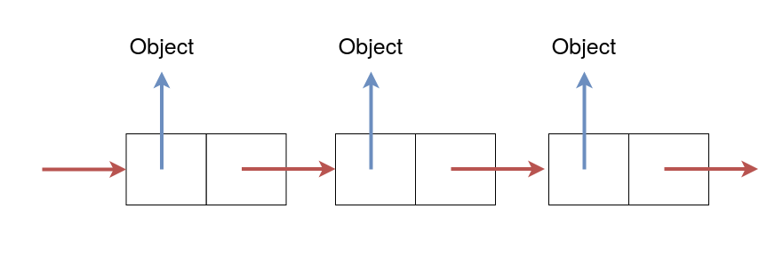
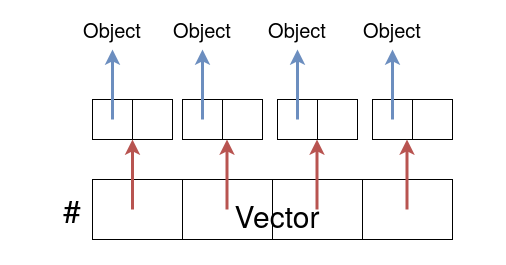
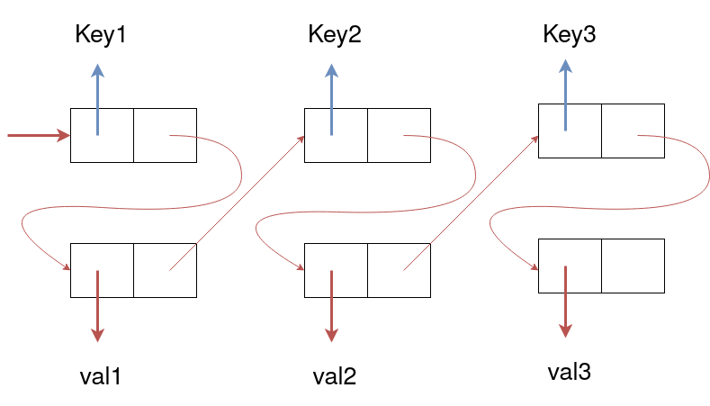

Weak-pair memo (Scheme)
Tags:Scheme2020-06-19
weak-pairというデータ構造がある。
これはcar部が弱参照でcdr部が強参照なペアで、SchemeだとMit/GNU Schemeで処理系依存の機能として提供されていたりする。→ 10.7.1 Weak Pairs
標準の仕様としては、より高度なデータ構造Ephemeronが R7RS large/SRFI-124で定義されている。
図はこんな感じ。弱参照を青、強参照を赤としている。

これはcar部が弱参照でcdr部が強参照なペアで、SchemeだとMit/GNU Schemeで処理系依存の機能として提供されていたりする。→ 10.7.1 Weak Pairs
標準の仕様としては、より高度なデータ構造Ephemeronが R7RS large/SRFI-124で定義されている。
図はこんな感じ。弱参照を青、強参照を赤としている。

通常のconsセルと違う点(Mit/GNU Schemeの例)
- carが回収済み(broken)の時、weak-car(weak-pair用のcar)すると#fが帰ってくる。
- carが回収済み(broken)かの述語が提供されている。
弱リスト
通常のconsで作ったリストのようにWeak Pairsでリストを構築するとWeak listができる。
ただ、carが回収済みなセルを消す実装をしたい場合、Schemeにはfinalizeのような機構があまり提供されないので少し面倒かもしれない。
cdr時に生存判定して、消していくとか?
弱ベクタ
car部を弱参照のboxとしても使えるので、それをそのままvectorの各要素に入れればweak-vectorが作れる。
弱連想リスト
弱連想リストは、- keyが弱参照、valが強参照
- keyが強参照、valが弱参照
- keyが弱参照、valが弱参照
下の図は、keyが弱参照、valが強参照の弱連想listの例で、通常のSchemeの連想リストと違う構造になっている。図が上下しているからわかりにくいが、実質奇数番目が弱参照で偶数番目が強参照のただの平らなリストで表現している。偶数番目もweak-pairを使えば両方弱参照の連想リストが作れるし、偶数奇数の強弱を入れ替えればkeyが強参照、valが弱参照のものも作れる。

keyが弱参照,valが弱参照のものは通常のSchemeの連想リストと同じ構造でweak-pairを用いて構築してもたしかに性質は変わらない。ただ、Ephemeronに置き換えた時に少し違う挙動になる。Ephemeronはcdrのオブジェクトからcarのオブジェクトに強参照していても、他に強参照がなければ回収できるという特徴をもつ。つまり、通常のSchemeと同じ構造のEphemeronを使った連想リストは、他の部分から強参照があっても回収できないが、上の図の構造で実装するとそれが可能になるという違いがでてくる。